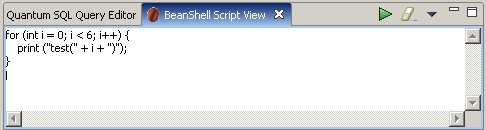
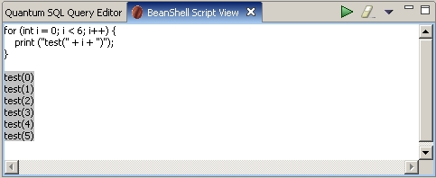
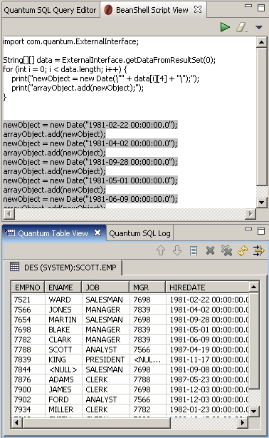
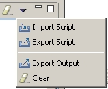

This view adds scripting capabilities to the Quantum plugin. It's basically a quick wrapup of the Beanshell facility. I cite from its website:
BeanShell is a small, free, embeddable Java source interpreter with object scripting language features, written in Java. BeanShell dynamically executes standard Java syntax and extends it with common scripting conveniences such as loose types, commands, and method closures like those in Perl and JavaScript.
For a complete information on Beanshell, syntax and capabilities, please go to its website (http://www.beanshell.org).
The view is opened in Quantum just like any other view, in Window->Show View->Other... Quantum DB->Beanshell View. This view, from Quantum 3.3 onwards, is an optional plugin, so if you don't see that view appear in the list, it might be that you haven't installed it.
Then something like this should appear:

Of course with no text at first. Then you can write the script,
for (int i = 0; i < 6; i++) { print("test(" + i + ")");}
and hit the green arrow (execute). That should generate :

As you see, the results will be highlighted with a grey background.
That's not very interesting, of course. But it gets more interesting as you can access the Quatum data, and manipulate it, as shown in the next example. If you write:
import com.quantum.ExternalInterface;
String[][] data = ExternalInterface.getDataFromResultSet(0);
for (int i = 0; i < data.length; i++) {
print("newObject = newDate(\"" + data[i][4] + "\");");
print("arrayObject.add(newObject);");
}
As you can see, we have to import the Quantum ExternalInterface class (or fully qualify it when used). This class is used to give easy access to data from Quantum to external code. Its functions are to be rather stable, or at least we'll try to keep them that way :)
As can be seen in the image, we use the getDataFromResultSet()
function, that returms an array of data from a recordset opened in the Table
View. Then we use the data to generate some "code" that can then be
pasted or saved. For the shell to work, the fifth column data[4] of the first
opened table in the Table View (getDataFromResultSet(0)) has to be a date value.
As I said previously, this is a quick wrapup of the Beanshell library, so the facilities are minimal. Nothing is customizable (not even the font), there is no syntax highlighting, or undo, or find/replace (just like in the Query View, you'll feel right at home :). All your written code will be executed as a unit (however, the interpreter will remember the state from one execution to another, so if you set a variable, it'll remain set till you close the view). The view will differentiate between code written and generated output, so you can save both independent. Hitting the Clear button (the one with the eraser) will clear only the output. If you want to clear it all, there is an option in the toolbar menu. That menu runs as :

The options are self-explanatory. You can export an script. That option will export only the unmarked lines (the lines with no grey background). You can later import that script. You can export the output, that is the lines with grey background. And you can clear the whole window.
That's more or less all. Using the ExternalInterface and the Beanshell will take some trials, but the Beanshell syntax is more or less java, and probably you won't need that many methods of the ExternalInterface.